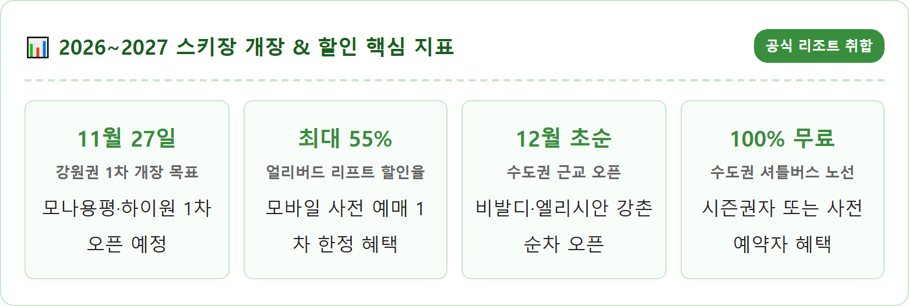
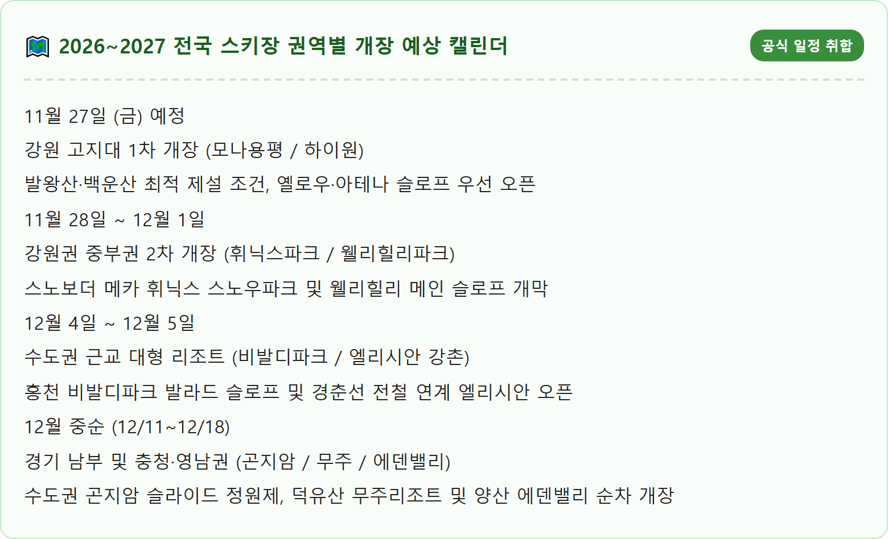
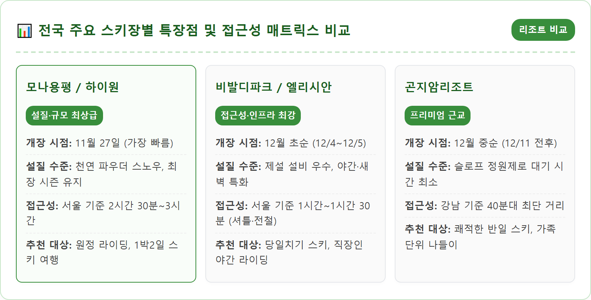
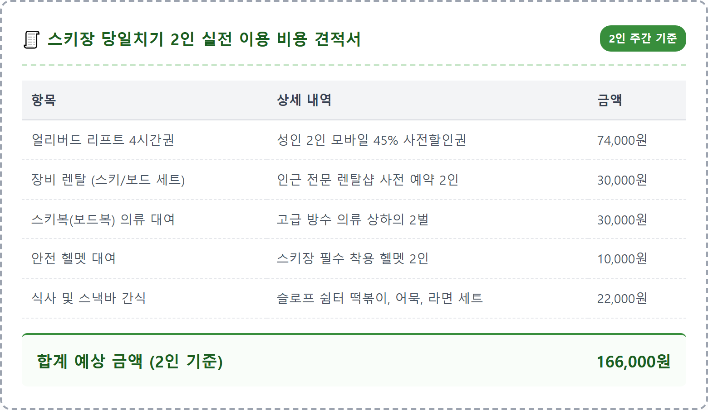
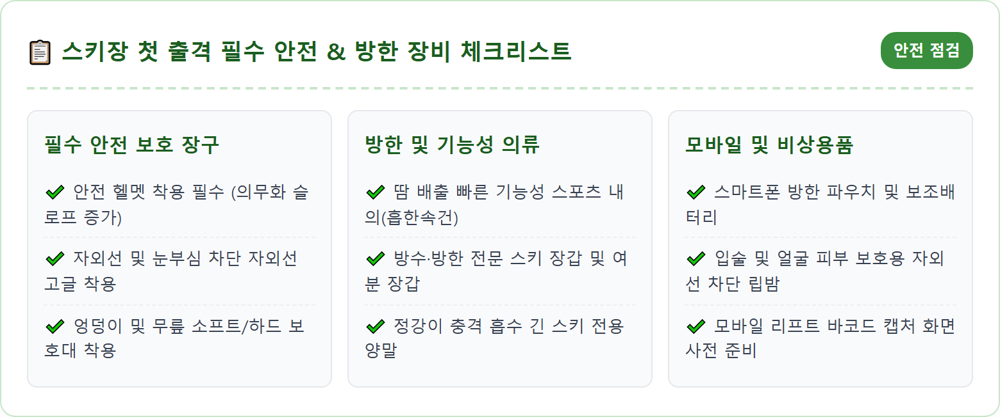
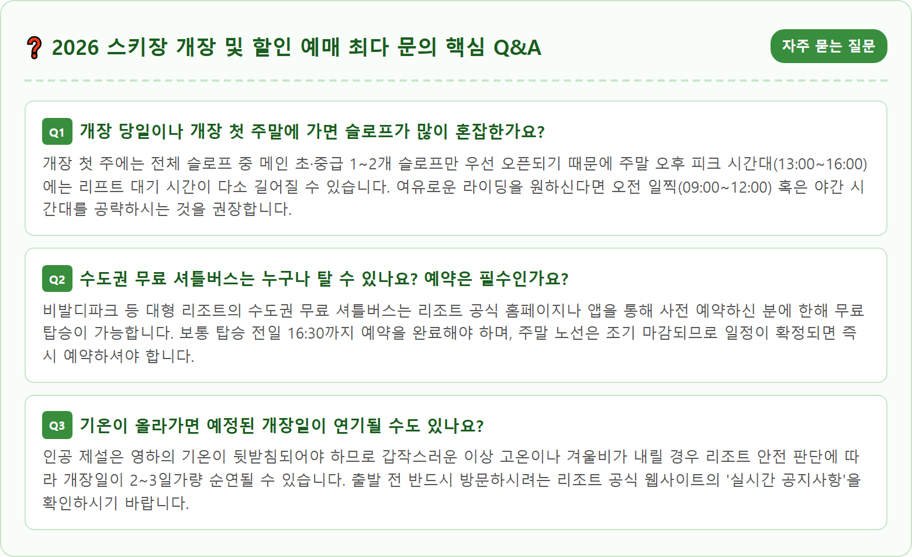

A cinematic, hyper-realistic winter sports photograph of a major ski resort slope in Gangwon-do, South Korea during early winter. Fresh, sparkling white artificial and natural snow blankets the wide, perfectly groomed ski slopes. Modern powerful snow guns (snow cannons) line the edges of the runs, actively spraying fine plumes of white snow into the cold azure sky. Ski lifts and modern gondolas operate gracefully against a majestic snow-capped mountain ridge. Bright crisp winter morning sunlight, detailed textures of powdery snow and mountain evergreen pine trees, professional sports photography, 8k resolution, 1:1 aspect ratio.
아침저녁으로 수은주가 영하권으로 곤두박질치고 본격적인 겨울 추위가 찾아오면서, 새하얀 설원을 기다려온 전국의 스키어와 스노보더들의 가슴이 다시 뛰기 시작했습니다. 2026~2027 동계 시즌은 11월 중순부터 북서쪽에서 강력한 대륙성 찬 공기가 한반도로 주기적으로 남하하면서, 강원권 산간 고지대를 중심으로 제설을 위한 최적의 기온 조건(영하 3℃ 이하, 습도 60% 이하)이 완벽하게 형성되고 있습니다.
스키장 개장의 성패는 단순히 자연 강설량에만 의존하지 않고, 최첨단 인공 제설기(팬 제설기 및 건 제설기)를 얼마나 집중적으로 가동하여 베이스 슬로프에 단단한 설포(설층)를 균일하게 다져놓느냐에 달려 있습니다. 각 리조트 제설팀은 밤낮없이 영하의 기온을 틈타 24시간 풀가동 체제에 돌입했으며, 슬로프 바닥에 약 50~70cm 이상의 단단한 얼음층을 먼저 형성한 뒤 그 위에 부드러운 인공 파우더 스노우를 덮는 정밀 제설 작업이 한창입니다.
올해는 기상청 겨울 장기 예보상 11월 하순부터 12월 초순 사이 평년보다 다소 낮은 기온 분포가 예상됨에 따라, 지난 시즌 대비 2~3일가량 개장 시점이 앞당겨지거나 안정적인 설질 속에서 개막전이 치러질 것으로 전망됩니다. 개장 초기에는 안전사고 예방을 위해 전체 슬로프가 아닌 초·중급 대표 코스 1~2개면을 우선 오픈하며, 기온 하강에 맞춰 상급자 코스까지 순차적으로 확대 운영됩니다.

국내 스키의 메카이자 매년 가장 먼저 은빛 문을 열어젖히는 강원도 평창과 정선 일대의 대형 리조트들이 2026 동계 시즌의 화려한 포문을 엽니다. 해발 1,458m 발왕산 자락에 위치한 '모나용평'과 해발 1,340m 백운산 자락에 자리한 '하이원리조트'는 모두 오는 11월 27일(금요일) 동시 1차 개장을 목표로 공식 카운트다운에 들어갔습니다.
모나용평은 전통적으로 가장 먼저 오픈하는 초·중급자 전용 슬로프인 '옐로우'와 '핑크' 슬로프에 대형 팬 제설기 수십 대를 집중 배치하여 이미 빽빽한 설포 작업을 마친 상태입니다. 올 시즌 개장 당일에는 개막 기념 리프트권 파격 할인 및 방문객 대상 웰컴 패키지 증정 이벤트가 준비되어 있어 전국 각지에서 모여든 스키어들의 뜨거운 열기가 예상됩니다.
하이원리조트 역시 마운틴 베이스에서 밸리 허브로 이어지는 메인 초급 슬로프인 '아테나 1·2' 코스를 우선 개방할 예정입니다. 하이원 특유의 완만한 경사도와 광폭 슬로프, 그리고 최신식 곤돌라 시스템을 가동하여 개장 첫 주말부터 쾌적하고 안전한 라이딩 환경을 제공할 계획입니다. 강원권 대형 리조트의 개장은 본격적인 겨울 스포츠 축제의 시작을 알리는 신호탄입니다.

서울 및 수도권 당일치기 스키어들이 가장 손꼽아 기다리는 곳은 단연 강원도 홍천의 '소노펠리체 비발디파크'와 춘천의 '엘리시안 강촌'입니다. 이들 스키장은 수도권에서 차량으로 1시간에서 1시간 30분이면 도착할 수 있는 압도적인 지리적 접근성과 함께 대규모 심야·새벽 스키를 운영하여 직장인과 학생들에게 폭발적인 인기를 누립니다.
비발디파크는 11월 하순부터 밤샘 인공 제설에 돌입하여 12월 4일(금) 혹은 5일(토) 오픈을 목표로 최종 준비를 서두르고 있습니다. 가장 대중적인 초급 '발라드'와 중급 '재즈' 슬로프가 1차로 열리며, 스노위랜드(눈썰매 테마파크)도 12월 중순경 연계 개방될 예정입니다. 수도권 전역에서 출발하는 직행 무료 셔틀버스가 개장과 동시에 운행을 개시하므로 자차가 없는 뚜벅이 스키어들에게도 최상의 편의를 제공합니다.
경춘선 ITX-청춘 열차나 전철을 타고 백양리역에 내리면 바로 슬로프와 연결되는 엘리시안 강촌 역시 12월 첫 주말 개장을 준비하고 있습니다. 이동에 따른 교통 정체 스트레스가 전혀 없다는 독보적인 장점 덕분에 주말 당일치기 나들이객들에게 최적의 선택지로 손꼽힙니다.
경기도 광주에 위치한 '곤지암리조트'는 서울 강남권에서 불과 40분 거리에 위치하여 수도권 최고의 프리미엄 스키장으로 자리 잡았습니다. 곤지암리조트는 최적의 슬로프 환경과 안전을 보장하기 위해 도입한 '슬로프 정원제'와 '모바일 퀵 패스' 시스템으로 유명합니다. 곤지암의 개장 예정 시기는 경기 남부권의 기온 추이를 감안하여 12월 둘째 주(12월 11일~12일경)로 조율되고 있습니다.
중부권 최대 규모를 자랑하는 전북 무주의 '덕유산리조트'는 해발 1,520m 설천봉에서 시작되는 장엄한 설경과 국내 최장 길이(6.1km)를 자랑하는 실크로드 슬로프로 명성이 자자합니다. 덕유산리조트는 12월 초순 개장을 목표로 하고 있으며, 곤돌라를 이용해 정상 향적봉 눈꽃 산행까지 함께 즐길 수 있어 일반 관광객들의 수요도 대단히 높습니다.
영남권 유일의 스키장인 경남 양산의 '에덴밸리리조트'는 남부 지방의 온화한 기후 특성상 영하권 기온이 안정적으로 유지되는 12월 중순(12월 18일 안팎) 개장을 목표로 막바지 시설 점검에 매진하고 있습니다. 부산, 울산, 대구, 창원 등 영남권 스키어들이 당일치기로 손쉽게 스키와 보드를 즐길 수 있는 소중한 레저 공간입니다.

시즌 내내 여러 번 스키장을 방문할 계획이라면 가장 먼저 고려해야 할 필수 아이템은 '얼리버드 시즌패스'입니다. 최근 몇 년간 국내 스키 시장의 대세로 자리 잡은 것은 개별 리조트 전용 시즌권을 넘어 복수의 대형 리조트를 무제한으로 이용할 수 있는 통합 시즌권, 이른바 'X5 시즌패스(용평, 하이원, 웰리힐리, 엘리시안, 에덴밸리 연합)'입니다.
1차 얼리버드 판매 기간(9~10월)을 놓쳤더라도, 개막 직전인 11월 하순까지 온라인 오픈마켓 및 리조트 공식 앱을 통해 '최종 얼리버드 차수' 판매가 진행되고 있습니다. 2026~2027 시즌패스는 성인 기준 약 40만 원대 중후반에서 50만 원대 초반에 가격이 형성되어 있으며, 19세 이하 자녀 1인 무료 등록(동반 자녀권) 혜택이나 워터파크·사우나 무료 이용권, 케이블카 무료 탑승권 등 파격적인 부가 혜택이 패키지로 제공됩니다.
한 시즌 동안 스키장을 최소 4~5회 이상 방문할 예정이라면 주간 리프트권을 매번 단품으로 구매하는 것보다 시즌패스를 구매하는 것이 비용 면에서 압도적으로 유리합니다. 또한 리프트 발권 창구에서 줄을 서지 않고 모바일 바코드로 곧바로 게이트를 통과할 수 있어 현장 대기 시간을 획기적으로 줄일 수 있습니다.

시즌패스를 구매할 만큼 자주 가지 않는 주말 나들이 스키어라면, 현장 매표소에서 제값을 다 주고 리프트권을 발권하는 것은 절대 금물입니다. 스키장 현장 매표소의 정상 리프트 요금은 4시간권 기준 6~7만 원대, 6시간권 기준 8~9만 원대에 육박하지만, 스마트폰 모바일 예매를 조금만 미리 챙기면 누구나 손쉽게 35~50%의 할인을 받을 수 있습니다.
가장 보편적인 할인 방법은 '소셜커머스 및 야놀자, 여기어때, 네이버 예약' 등 온라인 플랫폼의 얼리버드 예매를 이용하는 것입니다. 개장 직전부터 12월 초순까지 한정 수량으로 풀리는 1차 얼리버드 예매권을 구매하면 주중 및 주말 구분 없이 정가 대비 40% 이상 저렴한 가격으로 바코드를 확보할 수 있습니다. 당일 미사용 시 100% 무료 취소가 가능한 상품인지 환불 규정을 체크하는 것이 안전합니다.
둘째는 '제휴 신용카드 현장 할인'입니다. 신한, 비씨, KB국민, NH농협, 삼성 등 주요 카드사별로 1인 4매까지 전월 실적과 무관하게 30~40%의 현장 할인을 제공하며, 매주 특정 요일(예: 수요일 레이디스 데이, 금요일 심야 데이)에는 50% 반값 특별 프로모션이 진행되므로 각 리조트 홈페이지의 '이달의 제휴 카드 이벤트'를 미리 조회해 두는 것이 큰 도움이 됩니다.
장비가 없는 초보자나 가볍게 스키장을 찾는 분들이 가장 고민하는 부분은 스키장 내부의 '리조트 직영 렌탈'을 이용할 것인가, 아니면 스키장 입구 국도변에 늘어선 '외부 사설 렌탈샵'을 이용할 것인가 하는 점입니다. 두 방식은 편의성과 가성비 면에서 극명한 차이를 보입니다.
리조트 직영 렌탈의 최대 장점은 단연 '이동의 편리함'입니다. 차에 부피가 큰 스키 플레이트나 부츠를 싣고 다닐 필요 없이 슬로프 바로 앞 렌탈 하우스에서 장비를 수령하고 라이딩 후 즉시 반납할 수 있어 동선이 매우 간결합니다. 다만 직영 장비는 렌탈 회전율이 높아 장비가 다소 노후화되었거나 디자인이 획일적일 수 있으며, 의류의 경우 최신 유행 스타일을 기대하기 어렵습니다.
반면 외부 사설 렌탈샵은 동일한 비용으로 올해 새로 입고된 최신형 신상 스키복(오버핏 아노락, 멜빵 바지 등)과 하이엔드 부츠, 바인딩을 선택할 수 있어 스타일과 패션을 중시하는 젊은 층에게 압도적인 지지를 받습니다. 또한 스키장 주차장까지 장비를 실어다 주는 '픽업 및 배달 서비스'를 제공하는 샵들이 많아 사전 예약 시 배달 여부를 확인하면 직영 못지않은 편의성을 누릴 수 있습니다.

설레는 마음으로 스키장 슬로프에 서기 전, 부상 없는 즐거운 시즌을 위해 반드시 기억해야 할 가장 중요한 원칙은 바로 '철저한 안전 수칙 준수'입니다. 최근 전국 주요 스키장들은 슬로프 내 충돌 사고로 인한 뇌진탕 등 중대 인명사고를 예방하기 위해 '안전 헬멧 착용 의무화' 규정을 대폭 강화하고 있으며, 헬멧 미착용 시 리프트 탑승을 현장에서 제지하는 리조트가 늘고 있습니다.
개장 초기(11~12월 초)의 슬로프는 인공 눈의 비중이 높아 자연설에 비해 빙판화(아이스반) 현상이 발생하기 쉽습니다. 특히 해질녘 기온이 급격히 떨어지는 오후 4시부터 6시 사이 정설 시간대 전후로는 눈 표면이 딱딱하게 얼어붙어 엣지가 미끄러지기 쉬우므로 과속을 절대 삼가야 합니다.
또한 자신의 실력에 맞는 슬로프를 선택하는 것이 무엇보다 중요합니다. 초보자가 과욕을 부려 중·상급 슬로프에 진입할 경우 자신뿐만 아니라 다른 이용객의 안전까지 위협할 수 있습니다. 슬로프 중앙에서 휴식을 취하거나 앉아 있는 행위는 절대 금물이며, 휴식이 필요할 때는 반드시 슬로프 가장자리 안전 그물망 쪽으로 신속히 이동하여 대기해야 합니다.

장거리 운전 피로와 기름값, 톨게이트 비용을 아끼고 싶다면 각 리조트에서 수도권 전역을 대상으로 운행하는 '직행 셔틀버스'를 적극적으로 활용해 보시기 바랍니다. 대표적으로 비발디파크는 서울 강남, 광화문, 신촌, 노원, 잠실뿐만 아니라 인천, 부천, 수원, 일산, 분당 등 수도권 주요 거점 50여 개 정류장에서 매일 아침 직행 셔틀버스를 무료로 운행합니다.
하이원리조트와 모나용평 등 강원 남부권 원정 스키장들의 경우 전문 관광버스 여행사(예: 경기고속, 대원관광 등)와 연계하여 서울 주요 지하철역(사당, 종합운동장, 동대문 등)에서 정기 셔틀버스를 유료(왕복 2~3만 원대)로 운행하고 있습니다. 자차를 운전할 경우 빙판길 운전의 피로도와 스키 후 극심한 졸음운전 위험이 따르지만, 셔틀버스를 이용하면 따뜻한 차 안에서 편안하게 숙면을 취하며 다녀올 수 있어 가성비와 안전성 모두 뛰어납니다.
새하얀 설원 위를 미끄러지며 짜릿한 스피드와 상쾌한 겨울바람을 만끽하는 스키와 스노보드의 계절. 철저한 사전 정보 확인과 알뜰한 얼리버드 예매를 통해 2026~2027 동계 시즌의 첫 출격을 누구보다 안전하고 활기차게 열어보시기 바랍니다.
| 리조트명 | 위치 권역 | 개장 목표일 | 특화 장점 및 비고 |
|---|---|---|---|
| 모나용평 | 강원 평창군 대관령면 | 2026.11.27 (금) 예정 | 발왕산 최상급 설질, 옐로우·핑크 슬로프 1차 오픈 |
| 하이원리조트 | 강원 정선군 사북읍 | 2026.11.27 (금) 예정 | 아테나 초급 코스 개방, 완만한 광폭 슬로프 최적 |
| 비발디파크 | 강원 홍천군 서면 | 2026.12.04 (금) 예정 | 수도권 1시간 거리, 전역 무료 셔틀버스 매일 운행 |
| 엘리시안 강촌 | 강원 춘천시 남산면 | 2026.12.05 (토) 예정 | 경춘선 전철 백양리역 직결, 뚜벅이 당일치기 최강 |
| 곤지암리조트 | 경기 광주시 도척면 | 2026.12.11 (금) 예정 | 서울 강남 40분, 슬로프 정원제 쾌적한 프리미엄 스키 |
| 무주덕유산 | 전북 무주군 설천면 | 2026.12.05 (토) 예정 | 국내 최장 6.1km 실크로드, 덕유산 눈꽃 곤돌라 연계 |